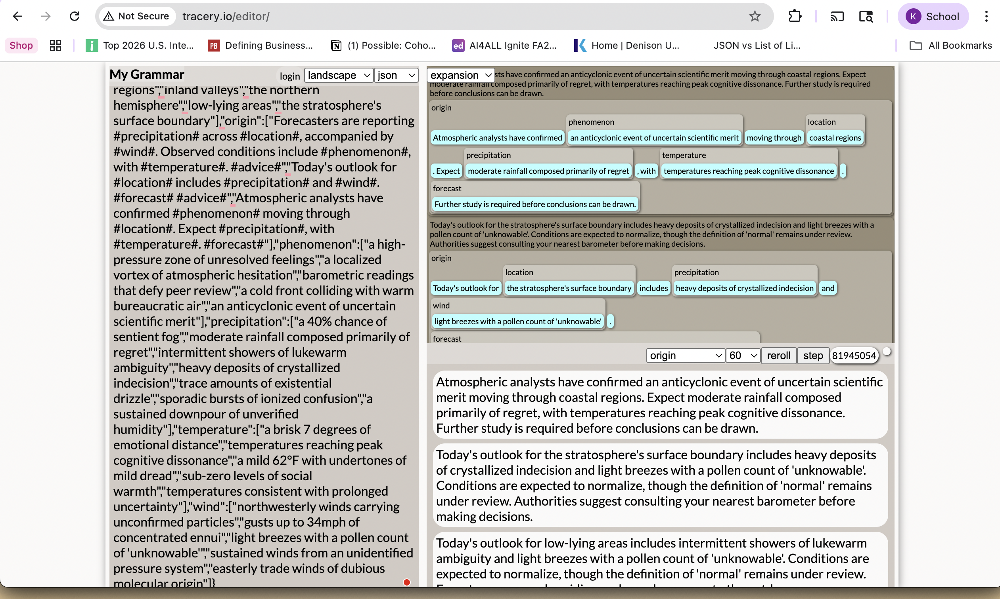

Make 8 · Week 9 · Text Generator
Absurd Weather Reports: A Tracery Generator
Tools: Tracery (tracery.io), ChatGPT · Week 9

The Generator
I built a text generator using Tracery, a grammar-based tool that constructs sentences by randomly combining predefined word lists. The concept: absurd weather reports written in a weirdly scientific register, where meteorological language collides with emotional and psychological vocabulary.
The grammar contained 10 symbols including location, precipitation, temperature, wind, phenomenon, and advice. Each symbol held 5-8 options. I decided which emotional concepts to treat as measurable weather phenomena: ennui, regret, cognitive dissonance, social warmth. The generator's personality was mine before a single output appeared.
Best 3 Outputs (Curated from 60+)
// "Defy peer review" and "emotional distance" measured in degrees - the sharpest collision in the set.
// "Maintain a healthy skepticism" works as absurdist humor AND as genuine epistemological advice.
// "The definition of 'normal' remains under review" sounds like a government footnote about reality itself.
Reflection: Where is the human in generative work?
Creativity, I found, is not about volume. The generator could have run forever - and that was the problem. Sitting there clicking generate for the sixtieth time, watching the system produce another report about crystallized indecision moving through the eastern seaboard, the process stopped feeling exciting and started feeling exhausting. Infinite possibility is not the same thing as infinite meaning.
The human was present at every stage, but differently. Before generation, I was a designer - I chose every word. During generation, I was a witness. After generation, I was an editor - and that is where I felt most in control. Choosing which 7 outputs to keep from 60+, and being able to say precisely why each one worked, required aesthetic judgment the system cannot perform.
The machine surprised me - "warm bureaucratic air" colliding with "sentient fog" was not something I planned. But I decided it was good. That decision - recognizing value in something produced accidentally - is where the human in generative work lives. Curation is where creativity lives.
Attribution & AI Use Log
- Tools Used
- Tracery (tracery.io), ChatGPT
- AI Prompts Used
- Asked ChatGPT to explain Tracery terms and suggest word list options.
- Human Contributions
- Concept, all grammar symbols and final word choices, curation of 7 from 60+ outputs, all written reflections.
- AI Contributions
- Generated initial word list ideas; Tracery randomly combined my vocabulary according to my rules.